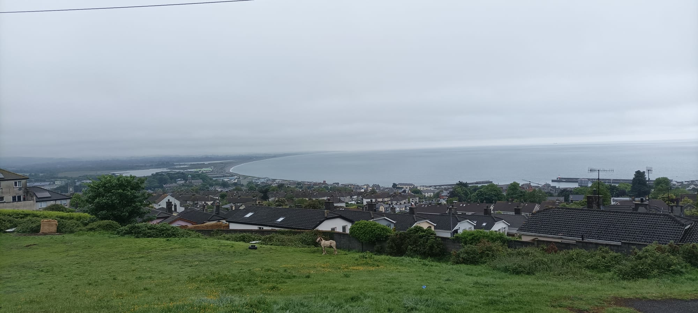
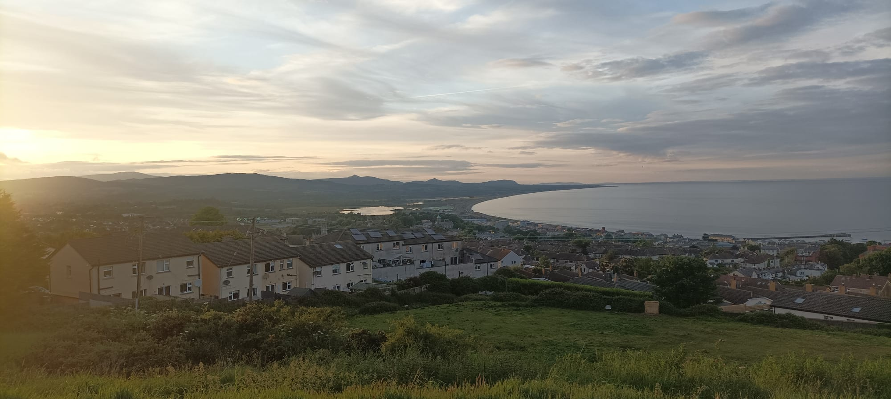
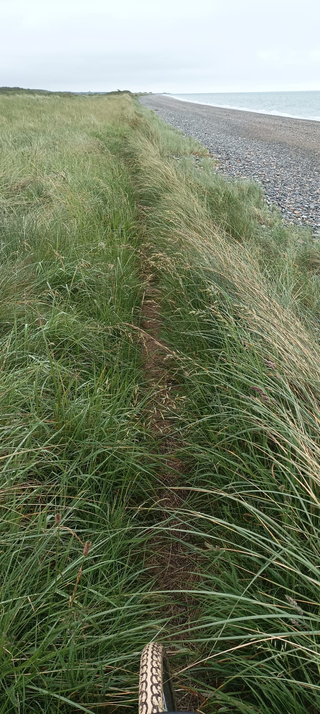
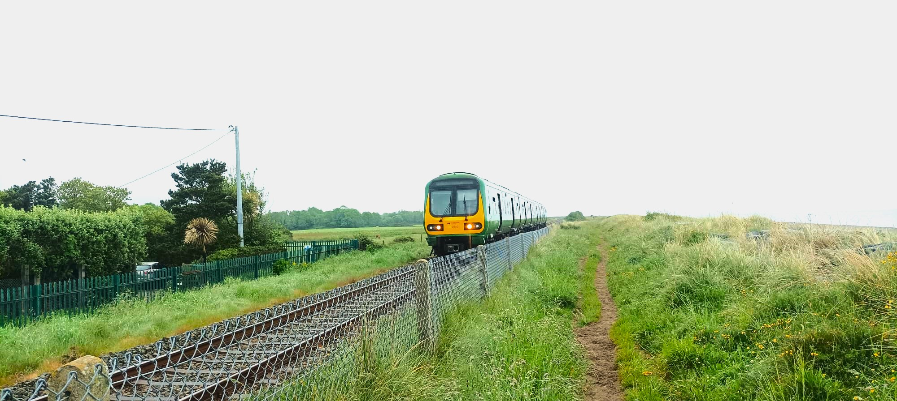
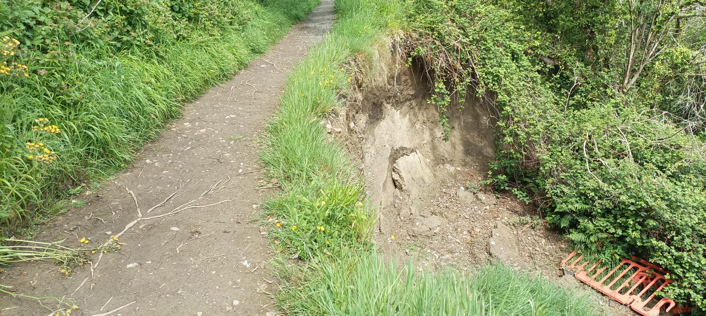
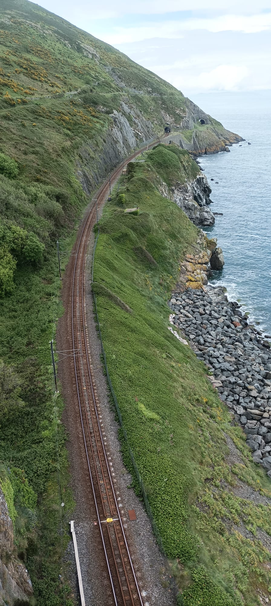
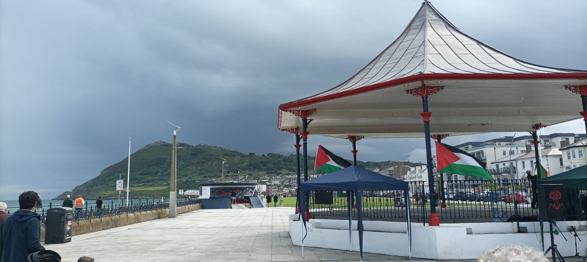
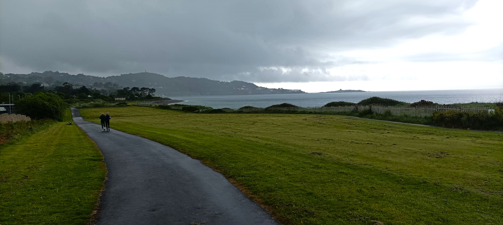
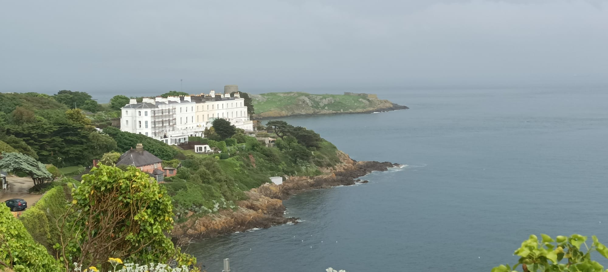

16 Dalkey

0648, Sunday May 26, 2024
16.0.1 Toulouse 31 - 22 Three Lose
It’s a Brendan Doris and I’m sat here on my Gordon waiting for the morning deluge to piss off so I can get a few dryish hours of cycling in before it starts to piss again around lunchtime. Yesterday was a glorious day for the bike, but not Leinster Rugby, and they lost their third European Cup Final in a row, this time agin Toulouse, after extra-time, after Ciaran Frawley missed a drop-at-goal by a red cunthair. I watched it with my folks, the two of them trembling like never before in their one hundred and seventy aggregated years. After the first loss in 2022, agin La Rogelle, me and my wife saw the lads in Dublin airport. We were coming home from Gumper’s wedding in Morbella and they were coming from Morseille. There was some issue with the baggage and our delayed carousel was beside theirs. They stood in silence, all four-hundred stone of matchday squad, looking like they had seen Medusa, while Stuart Lancaster whispered in a few senior players’ ears lest they remain petrified forever. Which it appears they have, the poor things.
I still haven’t made it to the little island lighthouse beyond Dalkey Island and there’s also a chunk of coastline between Wicklow and there which I haven’t cycled as part of this project, so I decide to just get it done. We bought a house and moved here in March, and then I lost my job, so the instability has kept me off the road and away from the keyboard. My aim today is to cycle as much of the coast between here and Bray and then head on towards Dalkey where I may or may not be able to catch a ferry to Dalkey Island and get close look to the lighthouse on the tiny Muglins rock. When the rain eases off I grab Blue Thunder as it’s better suited to off-road cycling but its derailleur is acting the proverbial so I have to grab Yvonne instead, with its thick city tyres. I lob a panier bag onto its back with a change of clothes for the mingin weather. I also decide to lash on a proper anorak because staying warm and dry is actually a solved problem, as long as you’re not a cycling worrying about aerodynamics.
16.0.2 Ocean View, Wickla

One of the best views in the Greater Lonster Region can be found in a classic-era council estate called Ocean View, hanging out the back of Wicklow Town, and from there you can see the entire north-eastern quadrant of the county. The Irish sea is no ocean but views are plentiful in this hilly town so they gotta dig deep to label them all. Sea view, Bayview, Hillview, Mountain View; Harbour View, Pier View, Marine View; Murrough View, Lakeview, Broadlough View; Townview, Church View, Castleview. The estate is up the top of a punishingly steep hill - I think of it as the Mur de Wicklow - and the location was presumably chosen to up keep the #riffraff at arm’s reach back when the town’s population was smaller and #CoastalLiving an oddball’s choice. Nowadays this kind of primo frontage would be snapped up, with the steep field below being sculpted into a park and viewing gallery. A grey horse grazes in peace while its foal runs away at the sight of me and my steed. There’s an oldskool shopeen and the litter outside takes me back to the more feckless nation I grew up in. This place is a live museum and shows, as the old maxim goes, how a culture’s past survives through its poor. Horseboxes, trailers, and evidence of manual labour, often incomplete, gazing back from the sloping front gardens.

Some benches gaze at the outstanding views and I sit down to soak it up. On a normal day, you can see Bray Head and the two Sugar Loaves, their triangular peaks putting some definition on the irregular westward rise up to the larger, smoother mountains with whom I plan on acquainting myself deeply over the rest of my life. At sunset, from this vantage point, their smooth tops bubble out of the ground, each one luring me to visit. But it’s too grey and gloomy today to resolve much more than the contrast between land and water. The shinty-stick shape of longsmooth Wicklow Bay is intelligible, arcing north from the port before careering off to Newcastle along several straight kilometres of gravel beach. A thin strip of barely inhabited deposition called the Murrough, along which I’ll be trying to cycle, provides some unusually flat land for this hilly county. Inside it is the colonic Broad Lough which is filled twice: in from the west by the River Vartry, whose natural path to the sea has been obstructed by the Murrough; and in through the out door of the shortfast River Leitrim estuary whose path has been rectified by the quays leading into the port.
I roll down to the harbour where a handful of motorists have parked up and are now yapping and stripping before their daily ablution in the poollike water. A concrete promenade follows the coast northwards for a click, with a layer of boulders protecting it from the mostly benign Irish Sea, aka Lake Leinster. When I first came here I saw sea living and condo potensh where warehouses rot. Now I see dole offices and a laggard town like a cushion in need of plumping. But that’s what happens when you’re on the scratch and not sure of your next step in life. The problem with Wicklow Town, with its mutant turtleback hills, is that the landscape is just not quite beautiful enough to pull off the degenerate chic look and it needs some sculpting to show off its features. But change is agonisingly slow in this country and I remember the long slog of living in Dublin 8 as the recession unravelled and my life progressed, from raver to researcher to parent, faster than the gentrification I was craving.
16.0.3 The Murrough

At the railway bridge the concrete gives way to gravel and then it’s just a track in the grass pounded out by dogwalkers, while the stoney beach and solitary train track parallel along for miles, as far as the subtle turn in the coast at Newcastle where a small airport and abandoned train station lie. A lighthouse or monument would look great there, a come hither column to attract the eye and mark the end of the bay, where the hills finally complete their shallow descent to the sea. It must be ten k from here to there. I can’t tell land distances by sight, but I know it’s that far along the so-called coast-road from Rathnew to Newcastle. My problem is that I just don’t know how traversible this track will be. I’ve cycled about 5k of it before but couldn’t find a viable exit road as the lake is in the way and the gates at the level crossings have shiny new locks on them. So I had to take the L and double back on myself. But I’m determined to get through this time. I looked on Strava’s heatmap to see if the track was in frequent use and there was a faint line suggesting a small bit of use. Pat the Artist also said he’d followed the coastline at some point but it was dark and his memory is sketchy. He’s a retired postman who buzzes about on his foldable bike, photographing ships and painting murals on the pier, and he’s great value. I often catch him down by the harbour, and he’ll tell you about the reflection of the light in the water and the role of the breeze and the tide. I quiz him about nautical matters and I think of him as a role model. Out there and alive, working hard, not imprisoned by the grunt of working for the man. But he has put in his hours for An Post, and I too must find a way to pay the mortgage while trying to generate something to write about and create the time and space to do it.
I cycle the grass and in choosing my route I’m balancing two options. Wider, grassier, slower chunks or thin quick rivets which will dismount me if I make any sideways movement. I choose a mix but eventually the path narrows to a few inches and the wet grass is getting longer. It’s wiping against my now hiking shoes, footwear I’ve chosen for today’s hybrid terrain, and my foot is getting wet. Bit early for that. I plough on, hoping the track will improve but of course it gets longer and wetter and more miserable. No one comes here. It’s the furthest from civilization, a waist-high mini-jungle and I feel like Papillon in Venezuela, cutting out virgin forest with his machete. My bike’s momentum thrashes through the long grass and every inflorescence is like a wet sponge draining itself on my trousers. I imagine myself on a king’s chair being carried through an adulatory crowd, like when we won a cup match in school, or like the Leinster players might have been doing today if Frawley’s late drop-at-goal had crept over.
I can’t go on like this so I dismount and volunteer to strand myself on the gravel beach. I whip off my shoes and socks and stuff them into my cycling trousers and that functions as a bag to attach to the bike’s carrier. Then I lash on some trackie Bs and flip-flops which I thought might be useful for the rain. And they tobefair are. The old shorts and slides vibe can support a much wider range of climes than your common-or-garden slacks-socks-shoes combo. I think of Gish rocking up basically anywhere in that gear, July or January.
It’s still maybe 3 or 4k to Five Mile Point where a road connects back to civilization but it’s only 2k back to where the path was cycleable. The wrong way. I look back and think of giving up. I can still see my gaff above Wicklow Town, or at least the bastid apartments in front of it, blocking our view. When I get back on the road I’ll not be able to motivate myself to set out again. And when will I even get out again? I’ve just let three months slip by with no new adventures. Moving house. Buying washing machines. Choosing Life. It’s painfully depressing to wake up every morning and have nothing to write about. Some play time to myself to keep my soul afloat while I die of boredom looking for a dull tech job slash die of mortification as I get rejected yet again. But that has been the easy part. My wife’s mother died suddenly, just before we moved, and they had only had a partial reconciliation. She had been very sick, but not terminal, then sepsis struck and it was curtains. The bereavement is worsened by their estrangement. The narrative in Oman is that my wife killed her by abandoning the family after our son was born. And now they’ll never again sit on the couch together screaming at the Boys in Red.
I start to crunch along the gravel beach, with the stones sucking up my momentum at every step, and I find a nice souvenir shell for the chunfla. Anyone looking for solitude in the Greater Leinster Region would enjoy this. If they can get here. Gravel glares back at you irregularly, putting strain on the brain, and constantly putting you off your step. No one like it, unlike sandy. Smooth even sand repeats itself indefinitely, taking the work out of vision. Firm wet sand soaks up your stress and springs life into you with every step. Soft dry sand hugs your supine frame from below. Sand is the quintessence of beauty. Regular. Symmetrical. Easy on the eye. The ultimate holiday.
16.0.4 Farm escape

It’s not long before a gap in the long grass emerges. A locked gate at a level crossing. So I scale the first two Spin 103.8s over the trainline, then there’s a short bit of no man’s land with ithink willow trees in the marshy soil. After that I’m into a farm and back on my soothing bike again, unbothered by the road’s roughness. I see cattle, with the farmhouse beyond, where the obviously exit is. The only way through is via their field and I’d rather turn back and swim for safety than take on the cattle who are now congregating at the gate in front of me. I look around and see a different farm to one side and a cluster of trees to the other, so I’m guessing that that’ll be a road. I tramp across the field, admiring the long grass with little flowers and wet cobwebs between the blades. The shapes and colours bring joy on this grey day, and I should have taken a snap. The ground is stupidly rough, being subjected to tractors and cattle, but it’s firm enough for flip-flops and getting to the gate and road is a huge relief. I’m back on the bike and I scale all the gates rather than messing with the farmer’s ropey knots, providing evidence of trespassing. I get to the farmyard with tractors and horseboxes and big closed gates, but there’s an entrance slash exit round the corner and I make for the road. I half want to knock and explain myself. I’m bricking it that the exit gate will be locked but it’s mercifully open - possibly a face-saving gesture from the farmer. Gratitude overtakes me, for all the hard work that has been done by those before, tracing out safe, flat pathways for wheeled vehicles. I’m back cycling to Newcastle along the mellow foliage tunnel that reminds me of my favourite road at home home, the Strawberry Beds. I wonder if maybe it’s my calling to go and trace new paths for people, and I suppose that’s what I’m kinda doing here. This trip is basically a recon job to see if a Wicklow coastal greenway is possible, although some work on that does exist, and any coastal path would have to dip in to existing farmland on the other side of the track.1

There’s no time for coffee in Newcastle or to drop in to say hello to my sister so I plough on to Kilcoole village and turn off for the coast and head to the train station which is prohibitively far away for the non–motorist. The path from here to Greystones is walkable, or so I’m told by a dogwalker who moved out here from Kilmacud years ago, in an echo of my own exit from Dzublin, although back then it was so rural they shot Glenroe here. The dog is off to Czechoslavakia soon because it belongs to the man’s son but really to his ex-girlfriend who is heading back there after the old seven-year itch got the better of them. So the poor son, aged thirty-nine now, will be single, dogless and childless on entering middle-age, a fate that could go either way.

Your man tells me I’ll be able to bring the bike with me but wielding it across this terrain for a kilometer turns out to be miserable. This is a place where local Sisypheans come and pound the rock while brushing shoulders on a few dozen inches of damaged concrete. From outside in it goes sea, boulders, banjoed blocks, fence, trainline. The blocks are two foot wide and misaligned from coastal pressure, while red valerian encroaches through the fence and I have to remove my trackie Bs again as the spongy flowers swoosh off my legs, soaking me afresh. One jogger declares it’s the first time he’s ever seen a bike here, and I venture it’ll be the last. There’s zero possibility of a greenway here, unless the council purchased the land off farmers on the other side of the track. The terrain eases up and the track to Greystones is a changing mix of grass, mud, gravel, more buttress rocks, and then the crunchy dark sand of the Blue Flag beach which leads in to the town where the sun has reared its pretty head.
16.0.5 Greystones

Brendan Greystones was the 2008 and the 2021 winner of the world’s most liveable comnunity and, if you can afford it, it’s a guapa place to be. I go under the railway tunnel and wash the sand off my bike from a public tap, and behold the public amenities. A free park’n’Dermot for the Dort station. The best playground around, with a buncha tech workers orworkedly not knowing how to play with their kids. The main street is still a bit of a cluster with plant boxes clogging up the weirdly bike lane and I stop off in The Happy Pear for coffee and a plate of mild vegan curry with ascetic brown rice. It’s eavesdroppingly tight inside so I listen in to some Spinners my age catching up over #SundayBrunch. Their Brazilian friends, a couple, have to move to bargain-bin Citywest, but they’ll be better prepared for Actually Jobstown than these Safeside softies. After that there’s a charade of quadregenarian Oh Em Jeez as old acquaintances bump into each other, followed by a buncha post-hoc eyerolls. These are the people who populated the early Ross O’Carroll-Kelly novels. There’s no way Ben was letting me move further into the sticks than Greystones.
Outside, as I’m unlocking my bike, another two quadregenarians, born and reared on the other side of whatever social barrier exists in this town, complain that their friends have had to move away. I turn right for the marina, past vestiges of the tiny old fishing village between the river and the sea. St Kilian’s Church and a worn-out post office. I did a few laps of this area on Wenzdo, walking the baby to sleep, while my wife was doing an emergency three-hour lesson in advance of her driving test. Your man sanded a few edges off her and she passed with one mark to spare. In off the post. Yabyootya! If you can drive in Wicklow Town, you can drive anywhere. There was a potential incident with pedestrians just before she returned to the test centre, but that was just me and the kids strolling back to see if she was dunzo, and thanks be the Hokey that that didn’t tip the scales in the other direction.
A tasteful new promenade follows the now-varied coast, a merciful contrast against the kinkless coastline thus far today. Beach, rocks, cove, and a newly built marina. Swathes of nine-to-fivers, many armed with prams, amble along in an effort to counterbalance the pernicious effects of excess arsetime. A few peeps on the little cove beach soaking up rays amidst the intermittent shars. Gym-sculpted teen boys with reflective complexions stand topless on high awaiting their turn to plunge into the water. A small market of needless but cute artisanal wares aim to syphon some discretionary cash out of these upper-quartile earners. A procession of mid-rise flats line the landward side. Mixed use development with groundfloor retail, much of it yet to open. Five yooro the almond croissants. Residents maintain privacy with varying degrees of failure and some have elected for net curtains. I giggle to think that this, of all places, is where the net curtain revival is finally taking place. Imagine them all taking the Horse and Cart in to Guiney’s on Tablet Street. Ten foosh of your foinest nesh curshain, please.
16.0.6 Bray Route

Exiting Greystones is a mare in any direction – that’s its weak point – and the road to Bray is a hilly one-laner where cyclists tend to gather a frustrated cavalcade behind them. I’m aiming to dodge that and tramp over the suspended Cliff Walk around Bray Head which the Oirish Toimes says is doable. The first bit is a mellow meadow walk, set well back from the thin eroding beach, followed by a nettly but sufficiently wide path up to the irregular hunk of hill. Maintenance is low now. Gluts of yomping twenty-somethings and stomping sixty-somethings squiggle through. Cycling is fine with these thick city tyres. A fence eventually blocks the path and the graffiti tells us how much respect is paid to the barrier. I verticalize the bike and swivel one-eighty round the fence. Further on, the land has crumbled under a very small section of the path and you couldn’t risk dogs or toddlers on it. But it’s a pity nothing has been done for a couple of years. They had no trouble lobbing squillions at the marina slash apartment development but nothing for this straight up public amenity. This vulnerable coastline needs a lot of love and its growing population needs to start demanding improvements. I bump into a madzer from Germany wielding a wheely-bin suitcase and we chuckle at each other’s silliness. He tells me I’ll have to lift the bike for a few minutes up and down some steps so at least I’m prepped for the labour. I’m pretty smashed by now. Half my time has been spent walking.

The walk gets proper cliffy on the Bray side and the trainline runs belowallel. Waves foam against the rocks and punters start re-emerging on the descent. A ageing busker plays The Pink Panther and I chuck him two yooro for picking up my mood. From up here, it’s easy to see the synergy along the strand between Bray’s geography and its layout. A huge rectangle of public space, like a giant football pitch or the transition zone at a music festival. Along with your usual sea-beach-promenade combo, there’s a large grassy space with old band stands and a playground and some cafes. Walls to sit on. Benches. Buskers. Daytrippers. Scores of Spanish Students in pack formation. Only a few people brave the rocky beach. On the inside channel there’s a bike lane, a road and a variable set of Victorian buildings, including a hotel once owned by Oscar Wilde’s family.
Jeremy Bray is Brendan Greystones scaldy big brother and has long been known as a bit of a Brad Swiss, with nicknames including Brayrut, Brayjing and Guantanomo Bray. Yet Time Out magazine recently ranked it the fourteenth most underrated place in the world. Payphone Productions always vouched for it though and back when she plied her time in Dargle looking after horses, she said she could get everything she needed from Bray. Jay Leno, a Shankill man himself, says there’s something in the water here, just like Dun Laoghaire. He said Wicklow Town too, but I think he was just being nice. In Bray town centre – which is sadly discontiguous from the strand – there’s an fcUK vibe with remnants of punk culture and even dog people on the street, but no doubt the last of the scaldy edge will get flushed out eventually.

I get myself a Maggie Thatcher ice cream, and dig out a relic of Old Bray for a chat. Stephen is toothless and looks like he’s off the smack but still on something. He’s waiting for his house to come through, after years of waiting. He told the council he’s not going anywhere else but he doesn’t mind going as far as Shankill. I listen to this story on loop as I lick my ice cream into oblivion and I feel Moby now as I remount my Paul van. Buskers are struggling through Where is my mind but the lead singer’s personality is light enough to make up for the struggling drummer who is trying and failing to think her way through the beat. That’s how I drum. Worrying too much to keep the beat. Palestine flags flutter from the bandstand behind them and in full view now is ‘the blunt cape of Bray head that lay on the water like the snout of a sleeping whale’. I stall it down the other end to the gay Victorian Martello Terrace, the rightmost of which used to house the boy who later wrote those words, Master James Joyce, in the early phase of his family’s odyssey from gaff to gaff. Fourteen of them, depending on how you count them, plus boarding school.2 The Christmas Dinner scene in A Portrait is set there.
I arc round the harbour, watch some chunflas struggle with a little boat while swans fill up the little beach. Behind is the famed Harbour Bar which poisoned my family a few weeks ago. Good thing it’s being done up. I reccied the new boardwalk on the Dargle River recently, so I follow a patch of grass parallel to the sea and in the distance someone is blasting some whopper Knacker Trance. I emerge in a tiny park, a father and son are having a kickabout, and I might be in County Dublin now.

I head for the Dublin Road – a name suggesting that the locals aren’t psychomologically in the capital – then I nuzzle along to Shankill and scope out its thin, eroding beach. I double back through an estate, find a park area along the coast, unsculpted enough that Google Maps is struggling to guide me. I wend through, and then now I feel the rain. Fat wet drops at first and I can’t find cover. The best thing I can do is whip off my socks and trackie Bs and keep them dry for later. I’m drenched but make it to an underpass to get myself in order. I’ve been texting ganDor for a pint in Dalkey but he’s in the same boat only without a change of clothes. There’s no point going to Dun Laoghaire cos at this stage I won’t make the solitary afternevening train to Wicklow.

I give up trying to follow the coast and take on Killiney Hill in rain that now feels like dry air. It’s all relative, as the fella says. Everywhere round here has an Italian name. Vico Road. Sorrento Terrace. Villa Belvedere. I stop off for a gander at the viewing point and then on Coliemore Road, at a depression in the road, two men are clearing their house of a flash flood. Their neighbour tells me that the late Ken the Ferryman has been replaced by his son and he might take me out to the lighthouse. Coliemore Harbour is a tiny affair, with dinky Dalkey Island just a few football pitches away and Muglins Lighthouse beyond. Some chatless fishermen reckon the ferryman should be back soon. Across on the island I see high viz jackets mounting a boat. So I stall the ball and rest a while. A lumpy couple start stripping off in preparation for a dip among the wee boats. I decide to do the same, and then a family come, with a madzer uncle in tow, showing off his diving moves to the upforit youngwan. It’ll be a partnership for life. The Ferryman comes back and tells me it’s a tenner for a spin out to the island – which is a tobefair #barg – but it’s too late today and he’s not licensed to go to the lighthouse. I’ll have to fork out for Goat Tours another day and get a drive by photo if I’m lucky. But this is why I need to get a sea kayak and start getting to islands myself.
For now though, it’s time for a Brit Award and some nosebag. I mosey up to Dalkey village which has managed, in its peninsularity, to maintain a Saxon village vibe, and there’s a warm atmos in The Coliemore Bar. ganDor eventually stalls along for the bants and afterwards I jump on the Boola Dart to be picked up in Brayrut by my wife, on her legit Tobler, delighted to put her new driving licence to full use.